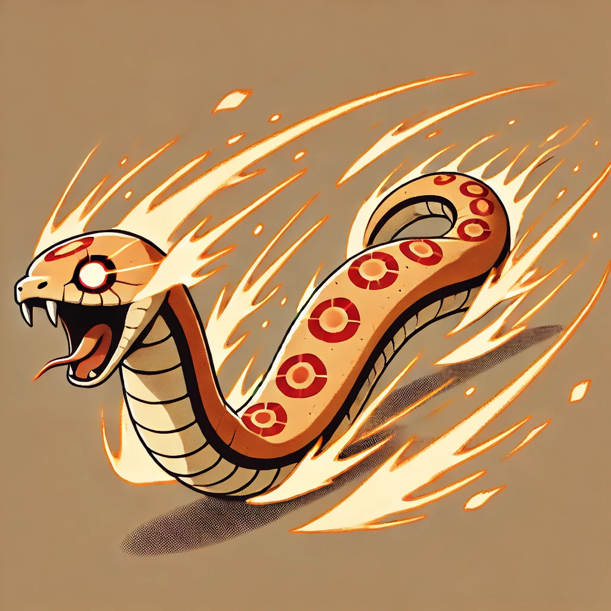

Le dernier grain du sablier tomba. Le serpent de Bokuton, confectionné par Kensai à la demande de son frère Kin, jaillit de la marionnette dans un sifflement furieux.
Avant que quiconque ne puisse réagir, il explosa violemment, secouant la salle d’une déflagration sourde.
Votre destin repose sur un roll...